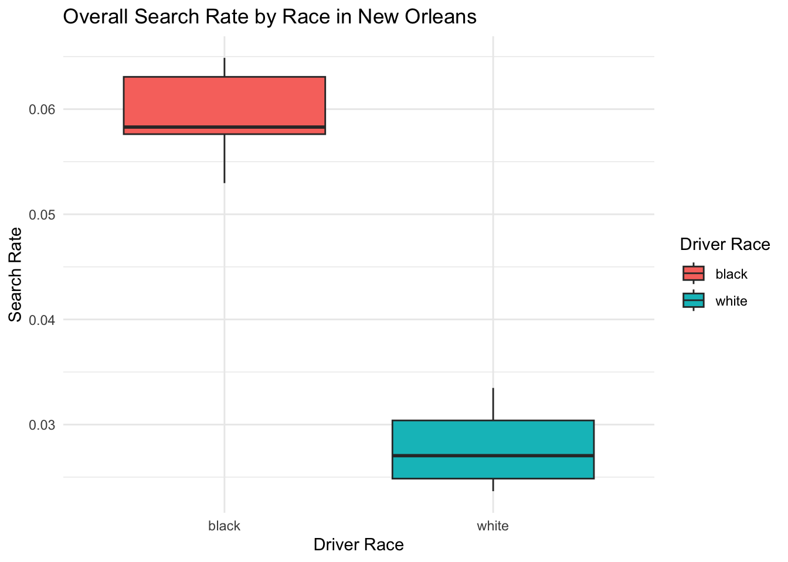

In this project, I investigate racial disparities in police search behavior during traffic stops across six U.S. cities: San Diego, Charlotte, Philadelphia, New Orleans, Austin, and Chicago. Using data from the Stanford Open Policing Project, I analyze whether Black and White drivers experience different search rates, and how those rates have changed over time. My approach involves querying each city’s data using SQL to summarize annual stop counts, search counts, and calculated search rates by race. I then compare these trends both within and across cities to identify patterns of disparity or improvement over time.
SELECT'Nashville'AS city, subject_race AS race,YEAR(date) ASyear,COUNT(*) AS total_stops,SUM(CASEWHEN search_conducted =TRUETHEN1ELSE0END) AS searches,ROUND(SUM(CASEWHEN search_conducted =TRUETHEN1ELSE0END) *1.0/COUNT(*), 3) AS search_rateFROM tn_nashville_2020_04_01WHERE subject_race IN ('black', 'white') ANDdateISNOTNULLAND search_conducted ISNOTNULLGROUPBY subject_race, YEAR(date)ORDERBY subject_race, YEAR(date);
Displaying records 1 - 10
city
race
year
total_stops
searches
search_rate
Nashville
black
2010
115023
7451
0.065
Nashville
black
2011
153025
8586
0.056
Nashville
black
2012
173393
9184
0.053
Nashville
black
2013
160925
9293
0.058
Nashville
black
2014
155570
9106
0.059
Nashville
black
2015
129698
7530
0.058
Nashville
black
2016
109146
6517
0.060
Nashville
black
2017
88745
5110
0.058
Nashville
black
2018
75310
4886
0.065
Nashville
black
2019
5016
322
0.064
In Nashville, I examined racial disparities in police searches over time. The data show the number of total stops, searches, and the resulting search rate for Black and White drivers from each year. This allows us to track whether search rates differ by race and whether those disparities have changed over time.
SELECT'Charlotte'AS city, subject_race AS race,YEAR(date) ASyear,COUNT(*) AS total_stops,SUM(CASEWHEN search_conducted =TRUETHEN1ELSE0END) AS searches,ROUND(SUM(CASEWHEN search_conducted =TRUETHEN1ELSE0END) *1.0/COUNT(*), 3) AS search_rateFROM nc_charlotte_2020_04_01WHERE subject_race IN ('black', 'white') ANDdateISNOTNULLAND search_conducted ISNOTNULLGROUPBY subject_race, YEAR(date)ORDERBY subject_race, YEAR(date);
Displaying records 1 - 10
city
race
year
total_stops
searches
search_rate
Charlotte
black
2000
690
59
0.086
Charlotte
black
2001
972
41
0.042
Charlotte
black
2002
40250
4192
0.104
Charlotte
black
2003
33438
3093
0.092
Charlotte
black
2004
34212
3234
0.095
Charlotte
black
2005
41655
4577
0.110
Charlotte
black
2006
49223
5834
0.119
Charlotte
black
2007
60716
6936
0.114
Charlotte
black
2008
53761
5551
0.103
Charlotte
black
2009
76677
6095
0.079
This query analyzes police search behavior in Charlotte. By comparing the yearly search rates for Black and White drivers, we can identify whether racial disparities exist and whether they have narrowed or widened in recent years. The summary table gives a year-by-year breakdown of search activity.
SELECT'Saint Paul'AS city, subject_race AS race,YEAR(date) ASyear,COUNT(*) AS total_stops,SUM(CASEWHEN search_conducted =TRUETHEN1ELSE0END) AS searches,ROUND(SUM(CASEWHEN search_conducted =TRUETHEN1ELSE0END) *1.0/COUNT(*), 3) AS search_rateFROM mn_saint_paul_2020_04_01WHERE subject_race IN ('black', 'white') ANDdateISNOTNULLAND search_conducted ISNOTNULLGROUPBY subject_race, YEAR(date)ORDERBY subject_race, YEAR(date);
Displaying records 1 - 10
city
race
year
total_stops
searches
search_rate
Saint Paul
black
2001
11892
1400
0.118
Saint Paul
black
2002
15511
1727
0.111
Saint Paul
black
2003
16997
1978
0.116
Saint Paul
black
2004
15954
1969
0.123
Saint Paul
black
2005
12541
1640
0.131
Saint Paul
black
2006
12644
2079
0.164
Saint Paul
black
2007
8862
1612
0.182
Saint Paul
black
2008
11559
1903
0.165
Saint Paul
black
2009
11349
1636
0.144
Saint Paul
black
2010
11782
1170
0.099
The Saint Paul data highlights racial disparities in search rates between Black and White drivers. Each row summarizes stop and search activity for a particular year, helping us assess whether the city’s policing practices have evolved or remained consistent over time.
SELECT'New Orleans'AS city, subject_race AS race,YEAR(date) ASyear,COUNT(*) AS total_stops,SUM(CASEWHEN search_conducted =TRUETHEN1ELSE0END) AS searches,ROUND(SUM(CASEWHEN search_conducted =TRUETHEN1ELSE0END) *1.0/COUNT(*), 3) AS search_rateFROM la_new_orleans_2020_04_01WHERE subject_race IN ('black', 'white') ANDdateISNOTNULLAND search_conducted ISNOTNULLGROUPBY subject_race, YEAR(date)ORDERBY subject_race, YEAR(date);
Displaying records 1 - 10
city
race
year
total_stops
searches
search_rate
New Orleans
black
2010
43384
2
0.000
New Orleans
black
2011
59462
5680
0.096
New Orleans
black
2012
44129
8218
0.186
New Orleans
black
2013
27376
6888
0.252
New Orleans
black
2014
35213
7231
0.205
New Orleans
black
2015
45587
8206
0.180
New Orleans
black
2016
31679
7197
0.227
New Orleans
black
2017
39834
9639
0.242
New Orleans
black
2018
23153
4878
0.211
New Orleans
white
2010
15302
0
0.000
In New Orleans, I explore annual search rates for Black and White drivers. This table helps reveal whether racial disparities in search behavior exist and if they are persistent across years. The presence of any consistent differences can point to systemic patterns in local policing.
SELECT'Austin'AS city, subject_race AS race,YEAR(date) ASyear,COUNT(*) AS total_stops,SUM(CASEWHEN search_conducted =TRUETHEN1ELSE0END) AS searches,ROUND(SUM(CASEWHEN search_conducted =TRUETHEN1ELSE0END) *1.0/COUNT(*), 3) AS search_rateFROM tx_austin_2020_04_01WHERE subject_race IN ('black', 'white') ANDdateISNOTNULLAND search_conducted ISNOTNULLGROUPBY subject_race, YEAR(date)ORDERBY subject_race, YEAR(date);
Displaying records 1 - 10
city
race
year
total_stops
searches
search_rate
Austin
black
2006
5736
497
0.087
Austin
black
2007
5283
355
0.067
Austin
black
2008
6449
324
0.050
Austin
black
2009
6922
323
0.047
Austin
black
2010
8226
430
0.052
Austin
black
2011
8232
671
0.082
Austin
black
2012
7234
596
0.082
Austin
black
2013
7745
634
0.082
Austin
black
2014
7335
540
0.074
Austin
black
2015
6210
475
0.076
The Austin dataset provides insight into how stop and search practices differ by race over time. The query outputs a breakdown of total stops, number of searches, and calculated search rates, allowing a clear comparison of treatment between Black and White drivers on a yearly basis.
SELECT'Nashville'AS city, subject_race AS race, YEAR(date) ASyear,COUNT(*) AS total_stops,SUM(CASEWHEN search_conducted =TRUETHEN1ELSE0END) AS searchesFROM tn_nashville_2020_04_01WHERE subject_race IN ('black', 'white')GROUPBY subject_race, YEAR(date)UNIONALLSELECT'Charlotte'AS city, subject_race AS race, YEAR(date) ASyear,COUNT(*) AS total_stops,SUM(CASEWHEN search_conducted =TRUETHEN1ELSE0END) AS searchesFROM nc_charlotte_2020_04_01WHERE subject_race IN ('black', 'white')GROUPBY subject_race, YEAR(date)UNIONALLSELECT'Saint Paul'AS city, subject_race AS race, YEAR(date) ASyear,COUNT(*) AS total_stops,SUM(CASEWHEN search_conducted =TRUETHEN1ELSE0END) AS searchesFROM mn_saint_paul_2020_04_01WHERE subject_race IN ('black', 'white')GROUPBY subject_race, YEAR(date)UNIONALLSELECT'New Orleans'AS city, subject_race AS race, YEAR(date) ASyear,COUNT(*) AS total_stops,SUM(CASEWHEN search_conducted =TRUETHEN1ELSE0END) AS searchesFROM la_new_orleans_2020_04_01WHERE subject_race IN ('black', 'white')GROUPBY subject_race, YEAR(date)UNIONALLSELECT'Austin'AS city, subject_race AS race, YEAR(date) ASyear,COUNT(*) AS total_stops,SUM(CASEWHEN search_conducted =TRUETHEN1ELSE0END) AS searchesFROM tx_austin_2020_04_01WHERE subject_race IN ('black', 'white')GROUPBY subject_race, YEAR(date);
library(ggplot2)library(dplyr)df |>mutate(year =as.numeric(year)) |>ggplot(aes(x = year, y = searches / total_stops, color = race)) +geom_line(size =1.2) +facet_wrap(~ city) +labs(title ="Search Rate Over Time by Race and City",x ="Year", y ="Search Rate",color ="Driver Race") +theme_minimal()
This plot displays search rates over time for Black and White drivers in each of the six cities included in the analysis seperated into 6 graphs per city. Each line represents the percentage of stops that resulted in a search for each racial group, by year. Across all cities, Black drivers consistently experienced higher search rates than White drivers. The gap between the two groups is visible in most cities and remains relatively stable over time, suggesting a persistent racial disparity in search practices.
df |>group_by(city, race) |>summarise(total_stops =sum(total_stops)) |>ggplot(aes(x = city, y = total_stops, fill = race)) +geom_col(position ="dodge") +labs(title ="Total Stops by Race and City",x ="City", y ="Total Stops", fill ="Race") +theme_minimal()

This bar chart compares the total number of stops for Black and White drivers in each city over the full time period covered by the data. It shows this by having total stops on the y-axis and cities on the x-axis. We can see two bars for each city to show how many times black people were stopped and how many times white people were stopped. While some cities show more stops for White drivers and others for Black drivers, this variation likely reflects differences in each city’s racial demographics rather than disparities in policing alone. It could also be attributed to having some incomplete or less data in some years This plot provides important context for interpreting the search rate data by showing the baseline number of stops per group.
Conclusion: Through querying traffic stop data across six U.S. cities using SQL, I analyzed how search rates compare between Black and White individuals over multiple years. By combining city-level results into a unified dataset, I was able to observe trends within and across locations, comparing both the rate and total number of searches by race. The analysis revealed that Black drivers consistently experienced higher search rates than White drivers in every city studied. While the magnitude of disparity varied by city and year, the pattern was both persistent and systemic. Interestingly, when comparing the total number of searches, the dominant racial group varied by city—likely reflecting differences in local demographic composition rather than search behavior alone.
Citation: Pierson, Emma, Camelia Simoiu, Jan Overgoor, Sam Corbett-Davies, Daniel Jenson, Amy Shoemaker, Vignesh Ramachandran, et al. 2020. “A Large-Scale Analysis of Racial Disparities in Police Stops Across the United States.” Nature Human Behaviour, 1–10.